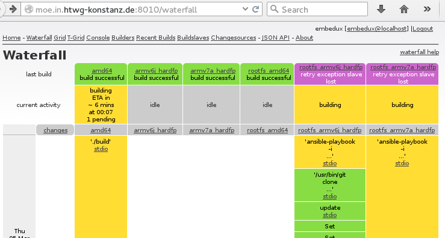

Build Monitoring
Buildbot buildmaster Webinterface
The buildmaster provides a webinterface that can be used to control and monitor the buildmaster's behavior. The two most important views are the waterfall view and the builders view.
Requirements
- A graphical Web-Browser :-)
- Buildserver Web-Interface URL. Find this in your User Documentation
Waterfall View
The buildbot waterfall-view gives an overview over all running and recent builds in one place. Colors indicate the state of the builds and links to detailed logs or general build information are provided.

As you can see, each buildstep offers a link to its' stdio, which let's you see in detail what has been going on during the build.
Notes
- The RootFS buildroutine sends its' output after the command has finished. For RootFS with many packages this can lead to long periods in between changes of the stdio.
Builders View
Builders Status
The builders view let's you quickly see the status of all buildslaves. On the following pictures, all are idle and have successfully finished their last builds.
Force builds
Depending on the buildmaster's scheduler configuration, it is also possible to schedule forced builds via the builders view.
Troubleshooting
If you need a more insight of what is going on, please visit the Troubleshooting Section